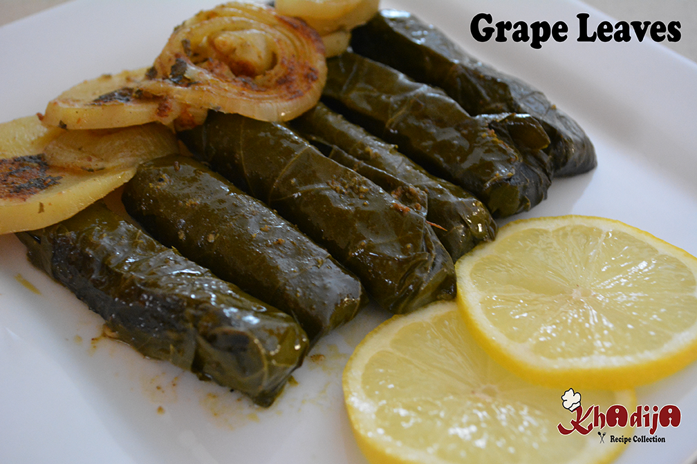

Grape Leaves Recipe
by Khadija
This Grape Leaves Recipe is a delicious and flavorful dish made with rice, vegetables, and spices rolled in grape leaves. It's a perfect meal to share with family!
Ingredients
- 1 white onion, chopped
- 1 green pepper, chopped
- 1 tomato, chopped
- 1 cup of parsley, chopped
- 1 lemon, juice
- 2 cups of rice
- 1/2 cup of olive oil
- 1/2 teaspoon of garlic powder
- 1 tablespoon of citric acid
- 1/4 teaspoon of black pepper
- 1 tablespoon of curry powder
- Salt to taste
- 1 can of grape leaves
Method
- In a big bowl, add onion, tomato, parsley, pepper, and rice along with each seasoning.
- Add the olive oil and lemon juice. Mix all ingredients together.
- Ensure the rough side of the grape leaves is up before placing the rice mixture.
- Place a little rice mixture in the center, towards the wider part of the leaf.
- Fold the left side, then the right side, and start rolling the grape leaves tightly without leaving spaces to prevent them from loosening.
- Once rolled, place the grape leaves in a large pot, layered with thin potato rings.
- Prepare a soup using 2 cups of water, 2 lemons' juice, olive oil, and seasoning, and pour it over the grape leaves.
- If desired, add onion slices. Bring the pot to a boil, then simmer for 20-25 minutes.